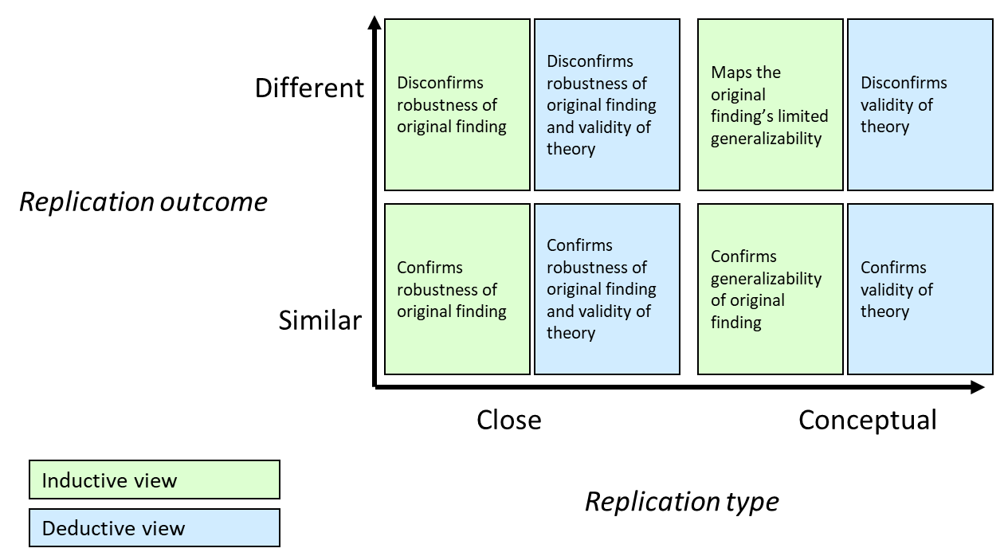

| Name | Question answered | Type of Reproducibility investigated |
|---|---|---|
| Bayes Factor: Independent Jeffreys-Zellner-Siow BF test | “What is the evidence for the effect being present or absent in light of a replication attempt, given that we know relatively little about the expected effect size beforehand?” | Different data - same analysis |
| Bayes Factor: Equality-of-effect-size BF test | “What is the evidence for the effect size in the replication attempt being equal vs. unequal to the effect size in the original study?” | Different data - same analysis |
| Bayes Factor: Fixed-effect meta-analysis BF Test | “When pooling all data, what is the evidence for the effect being present vs. absent?” | Different data - same analysis |
| Replication Bayes factor | “What is the evidence for the effect from the replication attempt being comparable to what was found in the original study, or absent?” - “Are the replication results more consistent with the original study or with a null effect?” | Different data - same analysis |
| Significance criterion | “Do the original and replication study both find a statistical significant effect in the same direction?” | Different data - same analysis; Same data - different analysis; Different data - different analysis |
| Difference in effect size | “To which degree do the effects from a replication study mirror the original” | Different data - same analysis; Same data - different analysis; Different data - different analysis |
| Confidence interval: original effect in replication 95% CI | “Given an original effect size, (what is the probability that) does a repetition of the experiment, with an independent sample of participants, produce(s) a CI that overlaps with the original effect?” | Different data - same analysis |
| Confidence interval: replication effect in original 95%CI | “Given an effect size and 95% CI, (what is the probability that) does a repetition of the experiment, with an independent sample of participants, give(s) an effect that falls within the original CI?” | Different data - same analysis |
| Prediction interval: replication effect in original 95% prediction interval | “Do the findings from the replication study align with a reasonable expectation, given the observed variation in the original study and replication study?” - “Are the replication estimates statistically consistent with the original estimates?” | Different data - same analysis |
| Small Telescopes | “Are the replication results consistent with an effect size big enough to have been detectable in the original?” | Different data - same analysis |
| Meta-analysis | “Given an original-replication study pair, does the pooled effect align with that of the original study?” - “Given a set of replications, is the effect size reproducible across studies?” | Different data - same analysis; Same data - different analysis; Different data - different analysis |
| Equivalence testing | “For the replication of an original null finding, does the replication study find an effect that is equally negligible?” - “Are the results from the replication statistically equivalent to the results of the original study?” | Different data - same analysis |
| Minimum effect testing | “Is the replication effect size significantly different from a minimal effect size of interest, required to support the original study?” | Different data - same analysis |
| Causal replication framework | “How can a replication failure be interpreted, from a causal perspective” | Different data - same analysis; Different data - different analysis |
| Text-based machine learning model to estimate reproducibility | “Given the text of an original paper, what is the probability of replication success?” | Different data - same analysis |
| Prediction market | “What do the participants in a prediction market predict as the probability that the original findings will replicate?” | Different data - same analysis |
| Presence/Absence of elements ensuring reproducibility,via proxies | “Do the design, methods and reporting of the original paper align with community standards of reproducible and transparent research?” | Same data - same analysis; Same data - different analysis; Different data - same analysis; Different data - different analysis |
| Quantified reproducibility assessment, QRA | “After performing multiple measurements of an object, what is the precision of the measured quantity obtained?” | Same data - same analysis; Different data - same analysis; Same data - different analysis; Different data - different analysis |
| Jaccard similarity coefficient | “By what extent do the results of two (or more) fMRI experiments overlap?” | Same data - same analysis |
| Sceptical \(p\)-value | “To what extent are the results of a replication study in conflict with the beliefs of a sceptic of the original study?” | Different data - same analysis |
| Modified Brinley plot | “Given a pre-specified desired effect and multiple replications, what is the share of replications that, represented graphically, achieve the desired effect?” | Same data - same analysis; Same data - different analysis; Different data - same analysis; Different data - different analysis |
| Likelihood-based approach for reproducibility | “Given a theoretically interesting effect size derived from the original study, what is the evidence for or against replicating this effect?” | Different data - same analysis |
| Bayesian mixture model for reproducibility rate | “Given the results (\(p\)-values) from a set of original and replication studies, what is the rate of reproducibility, and how is it related to certain aspects of the experiments?” | Different data - same analysis |
| Unified framework for estimating the credibility of published research | “For a specific published research work, what is the evidence for its credibility measured on four different dimensions: method and data transparency, analytic reproducibility, analytic robustness and effect reproducibility?” | Same data - same analysis; Same data - different analysis; Different data - same analysis; Different data - different analysis |
| Reproducibility scale of workflow execution - Tonkaz | “Given a certain original research paper with results based on computation, can the workflow to generate the results be executed and verified?” | Same data - same analysis; Same data - different analysis; Different data - same analysis; Different data - different analysis |
| Mean relative effect size | “What is the average ratio of replication study effects to original study effects?” | Different data - same analysis; Same data - same analysis |
| Correlation between effects | “Do the replication studies and the original studies produce effects that are correlated?” | Different data - same analysis; Same data - same analysis |
| Fragility Index | “Given the results of an original study were significant, what is the smallest change in the original data that is needed to deem the results non-significant? and vice-versa for original null results” - “How fragile are the original results to small changes in the underlying data?” | Same data - different analysis |
| Externally standardized residuals | “Is the original study consistent with the replication(s)?” - “Are all studies included in a meta-analysis replicable?” | Different data - same analysis; Same data - different analysis |
| Snapshot hybrid | “After replicating an original study, what is the evidence for a null, small, medium or large effect?” | Different data - same analysis |
| Bayesian Evidence Synthesis | “Given several conceptual replications with substantial diversity in data, design and methods but investigating the same theory, what is the evidence underlying a certain theory of interest?” | Different data - different analysis |
| Design analysis | “Given the results of an original study and an effect of a hypothetical replication study, what is the probability of the estimate being in the wrong direction, and what is the factor by which the magnitude of the effect is overestimated?” | Different data - same analysis |
| Reproducibility Maps | “For fMRI research, how many and which of the truly active voxels were strongly reproduced?” | Same data - same analysis; Same data - different analysis |
| Continuously cumulating meta-analytic approach | “Given subsequent replications that were performed to date, what is the current evidence for an effect?” | Different data - same analysis |
| Correspondence test | “To what extent does the effect size from the replication study differ or is equivalent to that of the original study?” | Different data - same analysis |
| Z-curve | “Do all studies combined provide credible evidence for a phenomenon?” | Different data - same analysis |
| Cross-validation methods | “To what extent can the stability of a result be trusted, and to what extent can the result be generalized?” | Different data - same analysis |
| Network Comparison Test, NCT | “Given two network structures, how similar are they to each other?” | Same data - same analysis; Different data - same analysis |
| Leave-one-out error | “Given a deep learning model, how generalizable are its results?” | Different data - same analysis |
| Subjective reproducibility assessment | “Does the replication team consider the replication as successful?” - “To what extent does the replication team trust in the reproducibility of a finding?” | Different data - same analysis |
| I squared - \(I^2\) | “Given a set of replications, to what extent is the total variation across study results due to heterogeneity?” - “How consistent are the results across replications?” | Different data - same analysis; Different data - different analysis |
| Credibility analysis | “How credible are the results of a study, in a Bayesian framework?” | Different data - same analysis |
| Consistency of original with replications, \(P_{\mbox{orig}}\) | “To what extent are the replication effect sizes consistent with the effect size of an original study?” | Different data - same analysis; Different data - different analysis |
| Proportion of population effects agreeing in direction with the original, \(\hat{P}_{>0}\) | “To what extent do the replication effect sizes agree with the sign found in the original study?” | Different data - same analysis; Different data - different analysis |
| RepliCATS | “How reliable do experts believe the claims from an original finding are?” | Different data - same analysis |
| RepeAT - Repeatability Assessment Tool | “Does the presented research align with community standards of reproducible biomedical research, using electronic health records?” | Same data - same analysis; Different data - same analysis |
| P interval | “Given the results of an original study, what is the range of \(p\)-values a replication (following the same design) would lie in with 80% probability?” | Different data - same analysis |
| RipetaScore | “Given certain trust in research, reproducibility and professionalism quality indicators, how high does a paper score?” | Same data - same analysis; Different data - same analysis |
| Bland-Altman Plot | “Do the effects estimated in several original-replication study pairs agree with each other?” - “How good is the agreement between repeated measures/studies?” | Same data - same analysis; Same data - different analysis; Different data - same analysis; Different data - different analysis |
| Sceptical Bayes Factor | “In light of the replication data, at which level of evidence can an advocate of the original study convince a sceptic?” | Different data - same analysis |
7 Discussion
Note — Preliminary Version 0.1
This is a preliminary version. Feedback welcome: lukas.roeseler@uni-muenster.de or GitHub.
7.1 Defining and Determining Replication Success
There is no strong consensus yet on what constitutes a replication success and some approaches can be biased (Schauer & Hedges, 2021) or imprecise (Patil et al., 2016). Like in classical null hypothesis significance testing (NHST), replication researchers face the trade-off between dichotomizing something that is not dichotomous (success vs. failure) and making a clear decision about the outcome. On the one hand this is a question about statistical choices and their interpretation, namely how to compare original and replication effect sizes (or p-values) and how to interpret differences. On the other hand, it is a more complex question about how to interpret a mixed pattern of results, where some results are consistent across original and replication, while others are not. Here, it is important for replication researchers to specify which effects are of primary interest in their preregistration, and how they will aggregate results, noting that requiring multiple effects to yield the same result will reduce statistical power.
Below, we present different approaches to assessing replication success as summarized by Heyard et al. (2025; Errington et al., 2021, Table 1; see also Muradchanian et al., 2021; Röseler & Wallrich, 2024)
7.2 Interpreting Divergent Results (Replication Failures)
When replications succeed, the original claim gains further credence (as long as the methods are sound). However, when replications fail, many explanations and interpretations can be advanced, which need to be carefully considered and discussed in a report. While replication failure can highlight issues with statistical conclusion validity in the original studies (John et al., 2012; Nelson et al., 2018; Simmons et al., 2011), other explanations need to be considered, including issues with internal, external, and construct validity in both original and replication studies (Fabrigar et al., 2020; Vazire et al., 2022). For example, internal validity is threatened when attrition rates differ between experimental conditions in original or replication studies, creating potential confounds in the interpretation of treatment effects (Zhou & Fishbach, 2016). Construct validity is threatened when original or replication studies use unvalidated ad-hoc measures, fail to employ validated manipulations of the target construct, or when differences in sample characteristics between original and replication studies mean that manipulations and measures do not work as intended (Fabrigar et al., 2020; Fiedler et al., 2021; Flake & Fried, 2020). External validity is threatened when original findings do not generalize to the specifics of the replication study due to person and context differences between studies that moderate the effect. Thus, before making statements about the original finding’s robustness and generalizability, replication researchers need to critically discuss potential methodological shortcomings in both original studies and replication attempts that limit statistical conclusion, internal, external, and construct validity.
7.3 The Role of Differences for the Interpretation of Findings
Each replication outcome should be evaluated in the light of its closeness, which is why all deviations with the respective reasons and, if possible, their potential impact on the results should be discussed. Existing theories may help assess whether a deviation should affect the outcomes. For example, most psychological theories are agnostic towards age so that a different distribution of participants’ age will be unproblematic in most cases. Researchers may choose to evaluate replications from both phenomenon-focused / inductive and theory-focused / deductive views. Different types of interpretations are listed in Figure 7.1 and integrated from previous accounts by Borgstede and Scholz (Borgstede & Scholz, 2021) and Freese and Peterson (Freese & Peterson, 2017, Figure 3).

Note.
Inductive or phenomenon-oriented views assume minimal generalizability of the original finding. For example, they cannot cast doubts on the original finding unless the replication is highly similar to the original study.
Deductive or theory-oriented views assume maximal generality of a theory. For example, different results (i.e., replication failures) cast doubts on the theory regardless of the replication type.
7.4 Comments from the Original Study’s Authors
If the replication results do not converge with the original results, replication researchers can reach out to the original study’s authors and ask for a comment that they can publish together with the replication report. A template for asking for a comment is in the appendix. Note that some journals (e.g., Journal of Comments and Replications in Economics) require such statements at the time of submission.